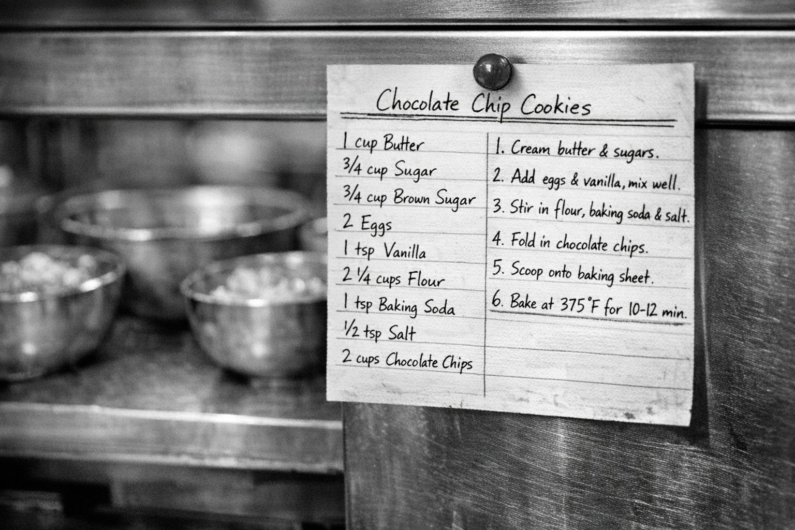
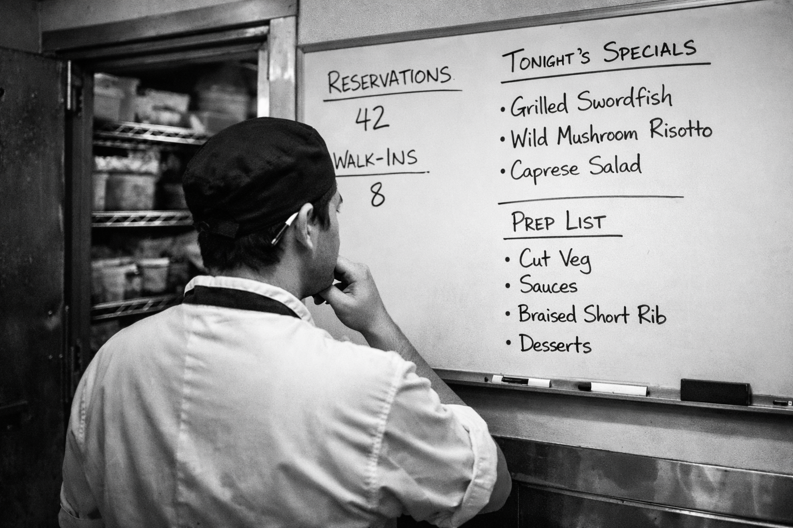
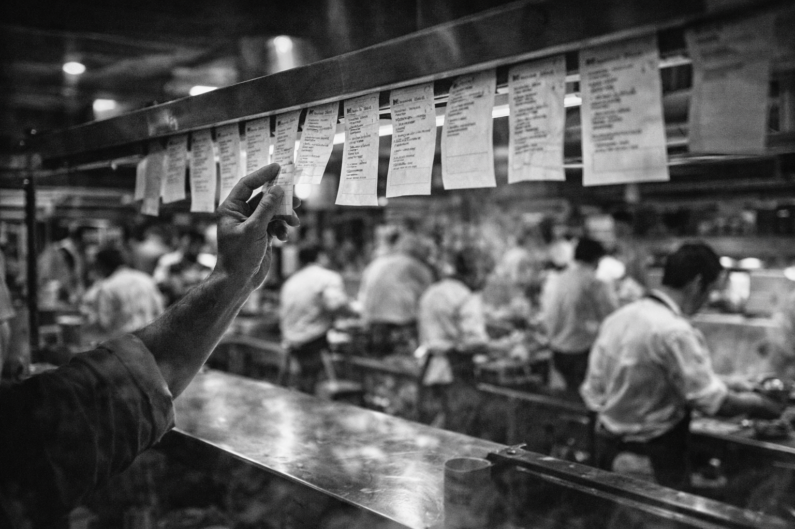

In the last memo, we talked about the shift from AI-Assisted to Compound. The difference: instead of reviewing every output, you build a system that improves itself.
This memo shows you how to build it. Five primitives, each one a step further from you doing the work.
To explain them, we're going to talk about kitchens.
Watch 90 seconds of a professional kitchen in full service. Pay attention to the head chef at the pass.
What you just watched is a compound system.
The head chef isn't cooking. They are tasting, correcting, directing. Every station knows its job. Tickets route work automatically. The kitchen runs because someone designed the system — not because someone does every task.
That's what we're building. Five primitives. One running analogy. Let's go.

KITCHEN
A recipe card sits at every station. Sauce vierge: olive oil, tomatoes, coriander, lemon, 68°C, four minutes. No improvisation. No "I think it was..." The recipe is the single source of truth. Any cook can execute it because the knowledge is in the system, not in someone's head.
ENGINEERING
A command is a recipe card for your AI. Instead of explaining the same task every conversation, you encode it once. Anyone on the team can invoke it. The AI executes it consistently every time.
# .claude/commands/scaffold-feature.md
Create a new feature branch and scaffold for $ARGUMENTS.
1. Create branch: feature/$ARGUMENTS from main
2. Set up the directory structure following conventions in CLAUDE.md
3. Add a failing test that describes the expected behavior
4. Create a draft PR with description following our PR template
Verify: branch exists, test runs and fails, draft PR is created.
Type /scaffold-feature auth-refresh. Same result every time.
No explanation needed.
What you stop doing: Explaining your project conventions from scratch every time you start a feature.

KITCHEN
Prep isn't a recipe — it's a workflow that makes decisions. The prep cook checks tonight's bookings (120 covers or 40?), reads the specials, knows what's in the walk-in, and decides what to prepare, how much, and in what order. Same job title. Different execution every night.
ENGINEERING
A skill is a command with judgment. It doesn't just follow steps — it reads context, assesses the situation, and adapts. The difference between "follow this recipe" and "prep for tonight's service."
# .claude/commands/implement.md
Implement the feature described in $ARGUMENTS.
Before writing any code:
- Read the relevant spec or issue
- Identify affected modules — check blast radius
- Assess complexity: if it touches 3+ modules,
break into sub-tasks and confirm the plan first
Implementation rules:
- Follow patterns in the existing codebase, not textbook patterns
- Every public function gets a test
- If unsure about a design decision, check CLAUDE.md first
When done:
- Run the full test suite
- Fix any failures before reporting back
- Summarize what you built and flag any decisions you madeSame command. Different execution depending on what the feature requires. The skill reads the room.
What you stop doing: Babysitting implementation. You provide direction — the skill handles execution with judgment.
KITCHEN
"You've got fish tonight." That's the entire handoff. The sous chef owns the station — prep, cook, plate, problem-solve — without being told each step. They know the standards. They know the constraints. They deliver the result.
ENGINEERING
An agent is an autonomous session. You give it a goal, constraints, and acceptance criteria. Then you go work on something else. It runs, iterates, and delivers.
# Launch an agent to own test coverage for the auth module
claude -p "Analyze src/auth/**.
Identify untested code paths.
Write tests for each one.
Run the suite after each new test.
Continue until coverage exceeds 90%.
Report what you added and any issues found." \
--allowedTools "Read,Write,Edit,Bash"You kicked that off and went back to your feature. Twenty minutes later: 40 new passing tests, a coverage report, and a list of two edge cases it flagged for your review.
What you stop doing: Writing tests yourself. Or more honestly — putting off writing tests because you have "real work" to do.
KITCHEN
Service starts. Garde manger fires starters. Saucier starts reductions. Pâtissier plates desserts. Each station is autonomous but coordinated — calling out timing, sharing information ("86 the salmon"), adapting in real-time. No single chef could run every station. Together, they serve 200 covers.
ENGINEERING
Multiple specialized agents working the same codebase in parallel. Each has a focus. Each operates independently. Together they cover ground no single session could.
# Three reviewers, three specializations, one PR
# Each runs in an isolated git worktree
claude -p "ROLE: Security reviewer.
Analyze this PR for: injection vulnerabilities,
auth/authz gaps, secrets or PII exposure.
Format: severity | location | issue | fix" \
--worktree &
claude -p "ROLE: Performance reviewer.
Analyze this PR for: N+1 queries,
missing indexes, unbounded fetches,
memory allocation in hot paths.
Format: severity | location | issue | fix" \
--worktree &
claude -p "ROLE: Correctness reviewer.
Analyze this PR for: logic errors,
missing edge cases, broken contracts,
test coverage gaps.
Format: severity | location | issue | fix" \
--worktree &Three reviewers. Three perspectives. Running simultaneously. No company would assign three dedicated specialists to every PR. Now it's free.
What you stop doing: Being the only reviewer. Or worse — being a reviewer who's too busy to catch everything.

KITCHEN
A table orders. The POS system fires tickets to the right stations automatically. No one reads every order and walks it to each cook. The system routes work to the right place at the right time. This is what takes the head chef off the line and puts them at the pass — where they actually add value.
ENGINEERING
A hook is a trigger that removes you from the loop entirely. When an event happens, the system responds. You're not invoking anything. You're not even in the room. The system runs itself.
// .claude/settings.json
{
"hooks": {
"PostToolUse": [
{
"matcher": "Write|Edit",
"command": "npm run lint --fix $CLAUDE_FILE_PATH"
}
],
"Stop": [
{
"command": "npm run test:all"
}
],
"Notification": [
{
"command": "echo '$CLAUDE_NOTIFICATION' >> .claude/activity.log"
}
]
}
}Every file the AI touches gets linted — automatically. Every session ends with a full test run — automatically. Every notification gets logged — automatically. You didn't invoke any of this. The ticket printer fired.
What you stop doing: Remembering. Remembering to lint. Remembering to test. Remembering to check. The system remembers for you.
Five primitives. One rule behind all of them:
Never make the same manual correction twice.
When you explain something to the AI and it works — make it a command.
When the command needs judgment — make it a skill.
When the skill should run without you — make it an agent.
When one agent isn't enough — make it a team.
When you're tired of invoking it yourself — add a hook.
Each correction, each improvement, each "here's how we do it" becomes part of the system. The system gets better. You stop repeating yourself. The compound effect kicks in.
The head chef doesn't cook every dish. The head chef built the kitchen.
Pick one thing you corrected the AI on this week. Just one. Turn it into a command, a rule, or a hook. Something small. The first rule isn't "automate everything." The first rule is: don't correct the same thing twice.